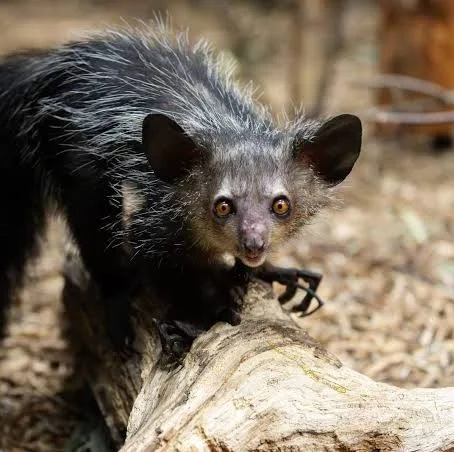

Aye-Aye
Endangered
Estimated remaining: 1,000–10,000
Habitat
Rainforests, dry forests, and plantations across Madagascar. Nocturnal and arboreal.
Threats
- Habitat destruction and deforestation
- Persecution due to superstition
- Crop conflict and low genetic diversity
Conservation efforts
Protected reserves, captive breeding, and education campaigns to dispel myths. Supported by Lemur Conservation Foundation and Duke Lemur Center.